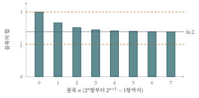

STEP III 2014, 문제 8
계속 읽기 전에 문제를 먼저 읽어 보자. 문제는 STEP Support Programme의 문제 데이터베이스에 있다: step.maths.org/questions/14-s3-q8
도입
조화급수(harmonic series) \(1 + \frac12 + \frac13 + \frac14 + \cdots\)는 항이 영으로 줄어드는데도 합은 한없이 커지는 급수의 가장 유명한 예이다. 이 급수는 터무니없이 느리게 커진다. \(10\)을 넘으려면 \(12{,}000\)개가 넘는 항이 필요하고, \(100\)을 넘으려면 약 \(1.5 \times 10^{43}\)개의 항이 필요하다. 그래도 결국에는 어떤 수든 넘어선다.
이제 분모에 숫자 \(2\)가 들어 있는 항을 모두 버려 보자. \(\frac12\), \(\frac1{12}\), \(\frac1{20}\)부터 \(\frac1{29}\)까지, \(\frac1{32}\) 등이 빠진다. 어차피 무한대인 합에서 항의 10분의 1 정도를 없애 봐야 별 차이가 없으리라 예상할 수도 있다. 그런데 실제로는 남은 항의 합이 \(80\)보다 작다. 이 놀라운 사실은 1914년에 A. J. Kempner가 증명하였으며, 이 문제는 아름다울 만큼 단순한 한 가지 아이디어, 즉 합을 블록으로 잘라 내는 방법을 통해 이 결과로 이끌어 준다.
시작하기 전에
첫 번째 부등식은 \(r = k^n\)부터 \(r = k^{n+1} - 1\)까지의 항으로 이루어진 블록에 관한 것이다. \(k = 2\), \(n = 3\)일 때 이 블록에는 어떤 항들이 있고, 모두 몇 개인가?
\(f(8), f(9), \ldots, f(15)\)의 여덟 개 항이다. 일반적으로 블록은 \(k^n\)부터 \(k^{n+1} - 1\)까지이므로 항의 개수는 \(k^{n+1} - k^n = k^n(k-1)\)이다. 부등식은 블록의 합이 (항의 개수) \(\times\) (가능한 가장 작은 항)과 (항의 개수) \(\times\) (가장 큰 항) 사이에 있다는 뜻이다.
차근차근 풀기
단계 1 블록의 합 어림하기
\(f\)가 감소(decreasing)함수이므로 블록의 모든 항은 다음을 만족한다. \[f(k^{n+1}) < f(k^{n+1} - 1) \leq f(r) \leq f(k^n) \qquad (k^n \leq r \leq k^{n+1} - 1).\] \(k^n(k-1)\)개의 항을 모두 더하면 주어진 부등식을 얻는다.■
단계 2 조화급수
\(k = 2\), \(f(r) = 1/r\)일 때, \(2^n\)부터 \(2^{n+1} - 1\)까지의 블록에 대한 두 경계는 무엇인가?
하계는 \(2^n \cdot \frac{1}{2^{n+1}} = \frac12\)이고 상계는 \(2^n \cdot \frac{1}{2^n} = 1\)이다. 따라서 모든 블록은, 아무리 멀리 있더라도, \(\frac12\)과 \(1\) 사이의 값을 기여한다(그림 2.3.1). \(n = 0, 1, \ldots, N\)에 대한 블록들을 이어 붙이면 정확히 \(r = 1\)부터 \(r = 2^{N+1} - 1\)까지의 합이 되므로, \(N + 1\)개의 블록을 더하면 \[\frac{N+1}{2} \leq \sum_{r=1}^{2^{N+1}-1} \frac1r \leq N + 1.\] \(N \to \infty\)일 때 좌변은 한없이 커지므로 부분합(partial sum)은 유계가 아니고, 따라서 급수는 발산(diverge)한다.■

단계 3 세제곱의 역수의 합
이제 \(k = 2\)는 그대로 두고 \(f(r) = 1/r^3\)으로 놓자. 블록 \(n\)의 상계는 \[2^n \cdot \frac{1}{(2^n)^3} = \frac{1}{4^n}.\] \(n = 0, 1, 2, \ldots\)에 대한 블록들은 모든 양의 정수를 정확히 한 번씩 포함하므로 \[\sum_{r=1}^{\infty} \frac{1}{r^3} \leq \sum_{n=0}^{\infty} \frac{1}{4^n} = \frac{1}{1 - \frac14} = \frac43 = 1\tfrac13. \qed\] (엄밀히 말하면 이것은 모든 부분합이 \(\frac43\) 이하임을 보인 것이다. 위로 유계인 증가수열은 수렴(converge)하므로 무한합이 존재하고 그 값은 \(\frac43\) 이하이다. 참값은 \(1.2020\ldots\)이다.)
단계 4 2가 없는 수 세기
앞자리에 0을 채우는 것을 허용할 때(그래서 \(7\)을 \(007\)로 쓴다), \(0\)부터 \(999\)까지의 정수 중 숫자 \(0, 1, 3, 4, 5, 6, 7, 8, 9\)만으로 쓸 수 있는 것은 몇 개인가?
세 자리 각각에 \(9\)가지 선택이 있으므로 이러한 문자열은 \(9^3\)개이다. 이들은 \(0\)부터 \(999\)까지의 수 중 \(2\)가 없는 수와 정확히 대응하며, 양수가 아닌 \(0\)을 빼면 \(S(1000)\)에는 \(9^3 - 1 = 728\)개의 수가 남는다.■
단계 5 Kempner 급수
이제 블록 아이디어를 자릿수로 정의한 블록에 적용한다. 이는 \(k = 10\)을 쓰는 것과 같다.
\(2\)가 들어 있지 않은 \(d\)자리 수는 몇 개인가? 그리고 \(d\)자리 수가 가질 수 있는 가장 작은 값은 무엇인가?
첫째 자리는 \(1, 3, 4, \ldots, 9\) 중 하나(여덟 가지: \(0\)도 \(2\)도 아님)이고, 나머지 \(d - 1\)개의 자리는 각각 아홉 가지 선택이 있다. 따라서 이러한 수는 \(8 \times 9^{d-1}\)개이고, 각각은 적어도 \(10^{d-1}\)이다. 그러므로 \(S(n)\)에 속하는 \(d\)자리 수들이 \(\sigma(n)\)에 기여하는 양은 많아야 \[8 \times 9^{d-1} \times \frac{1}{10^{d-1}} = 8 \left( \frac{9}{10} \right)^{d-1}\] 이다. 모든 자릿수 \(d = 1, 2, 3, \ldots\)에 대해 더하면 \[\sigma(n) \leq \sum_{d=1}^{\infty} 8 \left( \frac{9}{10} \right)^{d-1} = \frac{8}{1 - \frac{9}{10}} = 80.\] 엄격한 부등식을 얻으려면, 대부분의 경계가 전혀 날카롭지 않다는 점에 주목하면 된다(예를 들어 \(\frac13 < 1\)인데, 우리는 한 자리 수의 모든 항을 \(1\)로 어림하였다). 따라서 모든 \(n\)에 대해 \(\sigma(n) < 80\)이다.■
돌아보기
항을 묶어라. 두 합 모두 항별로 다루기는 쉽지 않다. 알맞은 크기의 블록으로 묶자 각각을 등비급수(geometric series)와 비교할 수 있었다.
알맞은 블록은 문제에 따라 다르다. \(1/r\)과 \(1/r^3\)에는 \(2\)의 거듭제곱이 알맞았고, 십진법의 숫자에 관한 문제에는 \(10\)의 거듭제곱이 알맞았다.
유계이고 증가한다. 두 수렴 증명 모두 2.2 절에서와 같은 원리에 기대었다. 양수 항의 부분합은 증가하므로 경계 하나만 있으면 충분하다.
숨은 수학
문제의 첫 번째 부등식은 코시(Cauchy)의 응집 판정법(condensation test)의 핵심이다. \(f\)가 양수이고 감소하면 \[\sum_{r=1}^{\infty} f(r) \text{가 수렴한다} \iff \sum_{n=0}^{\infty} 2^n f(2^n) \text{가 수렴한다.}\] 이 판정법은 어려운 급수를 쉬운 급수로 바꾸어 준다. \(f(r) = 1/r^p\)에 적용하면 \(\sum 2^n \cdot 2^{-np} = \sum (2^{1-p})^n\)을 얻는데, 이는 정확히 \(p > 1\)일 때 수렴하는 등비급수이다. \(1/(r \ln r)\)에 적용하면 이 급수조차 발산함을 알 수 있고, \(1/(r (\ln r)^2)\)에 적용하면 이 급수는 수렴함을 알 수 있다. 이 논증은 1350년경에 그림 2.3.1의 블록과 똑같은 방법으로 조화급수의 발산을 증명한 니콜 오렘(Nicole Oresme)까지 거슬러 올라간다.
조화급수는 얼마나 느리게 발산하는가
그림 2.3.1을 보면 각 블록이 약 \(\ln 2\)씩 기여하므로, 처음 \(N\)개 항의 합은 대략 \(\log_2 N \times \ln 2 = \ln N\)이어야 할 것 같다. 실제로 \[1 + \frac12 + \cdots + \frac1N = \ln N + \gamma + \text{($0$으로 가는 어떤 양)},\] 이며, 여기서 \(\gamma = 0.5772\ldots\)는 오일러-마스케로니 상수(Euler–Mascheroni constant)이다. \(\gamma\)가 유리수(rational number)인지는 아무도 모른다. 이 공식은 대학 1학년 해석학(analysis)에서 적분을 이용해 증명하게 되며, 조화수는 9.11 절와 11.12 절에서 다시 등장한다.
대부분의 수에는 2가 들어 있다
Kempner 급수는 왜 수렴할까? 큰 수들 사이에서 “2가 없는 수”는 매우 드물기 때문이다. \(10^d\)보다 작은 수 중 \(2\)가 없는 수의 비율은 많아야 \((0.9)^d\)이고, 이는 \(0\)으로 간다. \(100\)자리 수 중 숫자 \(2\)를 피하는 수는 \(0.003\%\)도 되지 않는다. 그러니 우리는 항의 10분의 1을 없앤 것이 아니라 거의 전부를 없앤 것이다. 우리가 얻은 경계 \(80\)은 넉넉한 값이다. 1979년에 Robert Baillie가 가속된 방법을 써서 이 합을 소수점 아래 여러 자리까지 계산하였는데, 그 값은 약 \(19.257\)이다.
거듭제곱의 역수의 합
소문항 (ii)의 합은 \(\zeta(3)\)으로, 1.2 절에서 만난 리만 제타 함수(Riemann zeta function)의 값이다. 2.4 절에서는 \(\zeta(2) = \pi^2/6\)을 정확히 구할 것이며, 오일러(Euler)는 \(\zeta(4), \zeta(6), \ldots\)에 대한 공식을 찾았다. 그러나 \(\zeta(3)\)에 대한 공식은 아무도 찾지 못하였다. 1978년 Roger Apéry는 2.9 절에 나오는 것과 비슷한 적분을 이용하여 \(\zeta(3)\)이 무리수(irrational number)임을 증명해 수학계를 놀라게 하였다. \(\zeta(5)\)가 무리수인지는 아직도 알려져 있지 않다.
사고 기술
양수 항으로 이루어진 급수가 수렴하는지 판단하려면, 항들이 대략 일정한 블록으로 묶고 각 블록을 간단한 급수와 비교하라.
비교 판정법(comparison test)은 대학 1학년 해석학의 기본 중의 기본이다. 핵심 기술은 무엇과 비교할지 고르는 것이다. 여기서는 항이 기껏해야 일정한 배수만큼만 변하는 크기 \(2^n\) 또는 \(10^d\)의 블록을 골랐다.
더 도전하기
느림을 느껴 보기. \(\sum_{r \leq N} 1/r \approx \ln N + 0.5772\)를 이용하여, 조화급수가 \(10\)을 넘으려면 몇 개의 항이 필요한지, 그리고 \(100\)을 넘으려면 몇 개가 필요한지 어림하여라.
판정법의 실제. \(f(r) = 1/r^2\)에 소문항 (i)의 방법을 적용하여 \(\sum 1/r^2 \leq 2\)임을 보여라. 그다음 첫째 항을 따로 다루어 경계를 개선하여라.
수렴과 발산 사이. \(k = 2\)인 블록 부등식을 이용하여 \(\sum_{r \geq 2} \dfrac{1}{r \ln r}\)은 발산하고 \(\sum_{r \geq 2} \dfrac{1}{r (\ln r)^2}\)은 수렴함을 보여라.
더 많이 빼기. 심화 십진법 표기에 \(2\)도 \(7\)도 없는 양의 정수들의 역수의 합이 \(35\)보다 작음을 보여라. (\(35\)가 어디서 나오는지 알 수 있는가?)
더 읽을거리
Julian Havil, Gamma: Exploring Euler’s Constant (Princeton University Press). 조화급수와 \(\gamma\)를 비롯한 많은 내용을 실력 있는 고등학생을 위해 쓴 책이다.
Mary Hart, Guide to Analysis (Palgrave). 급수와 비교 판정법에 관한 장이 명료한, 간결한 대학 1학년 교재이다.
Robert Baillie, “Sums of reciprocals of integers missing a given digit”, American Mathematical Monthly 86 (1979). 이 절을 공부하고 나면 읽을 수 있는 짧은 논문이다.